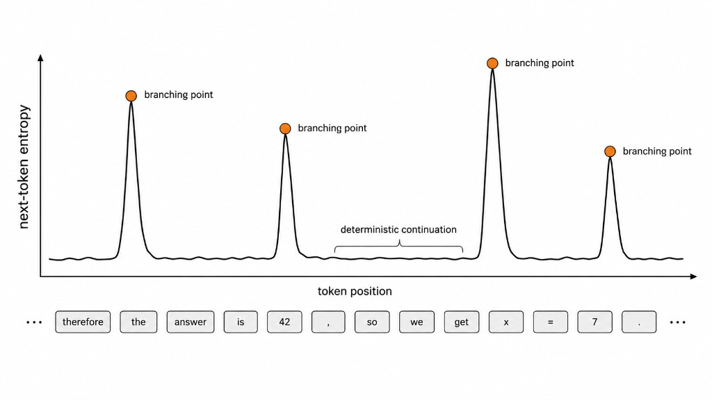
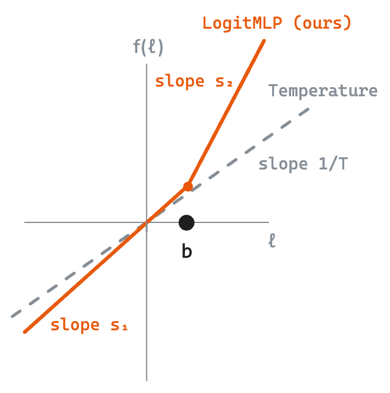
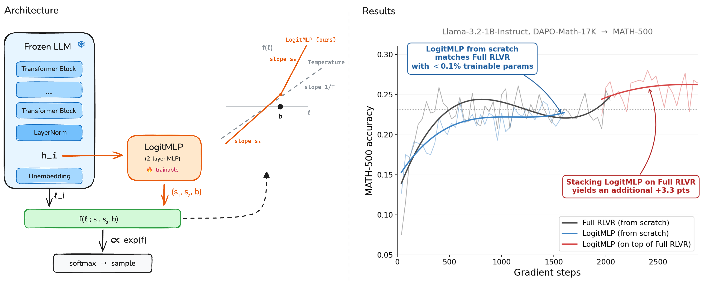
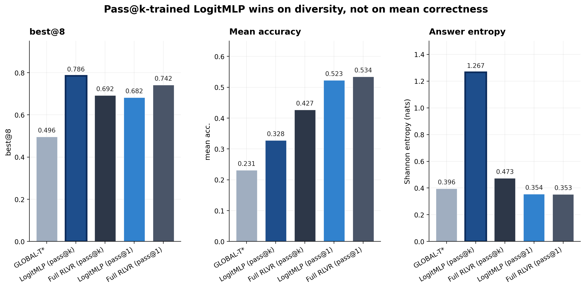
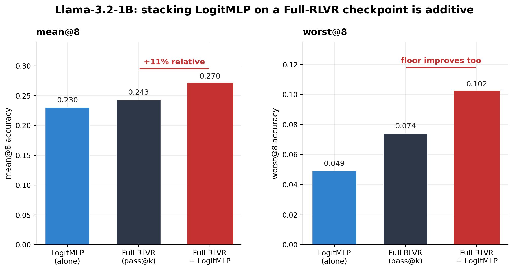
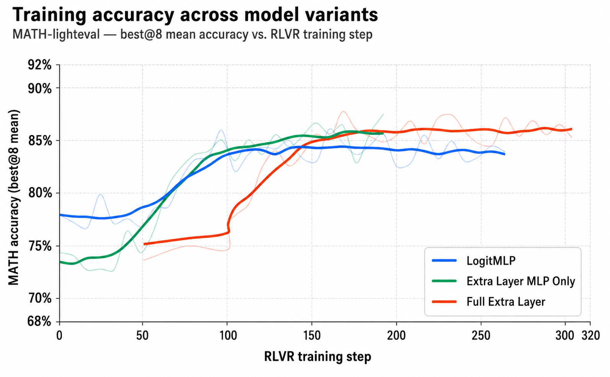
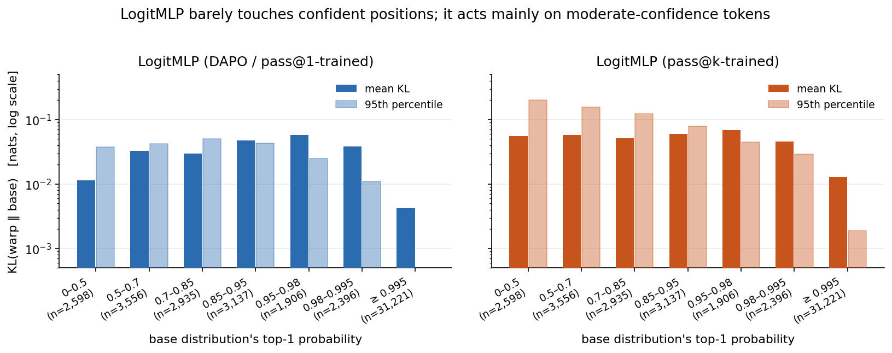
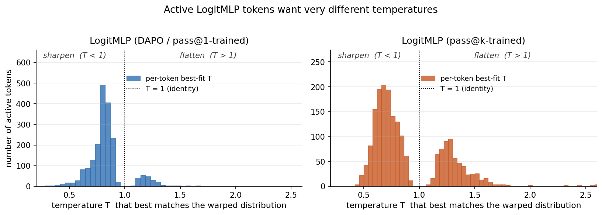

Beyond Temperature
Rethinking fixed, global temperature and moving toward token-adaptive logit transformations. LogitMLP builds on standard post-training and enables better performance and exploration for negligible parameter cost.
We explore replacing traditional temperature scaling and sampling methods in LLMs by instead letting the LLM specify the reshaping and rescaling of its own probability distribution on a per-token basis (essentially allowing the LLM to pick a temperature and sampling method for each token). We train this token-adaptive transform with RLVR on top of a frozen base model and show that for a negligible cost (increasing parameter count by ${<}0.1\%$ and only updating those parameters) it recovers most of the gap between a temperature-optimized base model and full-parameter RLVR fine-tuning on math reasoning benchmarks. When further stacked on top of an already RLVR-trained checkpoint, our method gives additional gains over a temperature-optimized full-RLVR model.
Our results show that LogitMLP is a very cheap addition to standard post-training regimes that enhances performance and enables better exploration for inference-time scaling.
Prelude: What's the deal with temperature and sampling?
Transformer-based language models don't directly output tokens; they output a probability distribution that we then sample from. The LLM itself doesn't tell us how to sample — that's up to us. The standard approach is to first rescale the distribution by dividing the log-probs by a constant temperature, then further reshape it through a sampling method (greedy, top-$k$, top-$p$, min-$p$):
$$ x_t \;\sim\; \mathrm{softmax}\!\left(\,\mathcal{C}\!\left(\,\ell_t / T \,\right)\,\right) $$where $\ell_t$ is the logit vector at position $t$, $T$ is the temperature, and $\mathcal{C}$ is the sampling rule. The choice of $T$ and $\mathcal{C}$ has a massive impact on pass@1, pass@k, and calibration — and yet both are picked by hand, by a human, after the model has done all of its actual learning.
This is awkward for two reasons.
First, the next-token distribution is the only thing telling us how certain the model is — and certainty varies enormously across tokens. Mid-word, the distribution sharply peaks on the obvious continuation. At a branching point in a chain of thought, it spreads across several plausible directions. Good sampling should respect that — sharp where the model is confident, exploratory where it isn't. But $T$ and $\mathcal{C}$ are global: the same scalar and the same truncation rule are applied to every token of every problem, even though different problems have different optimal temperatures and per-token decoding strategies can beat any fixed $T$ by adapting to per-step entropy. The sampling rule $\mathcal{C}$ is worse: it's a discrete choice from a hand-designed grab bag (top-$k$, top-$p$, min-$p$, …), with no reason to expect the best member of that grab bag is close to the best member of some larger family.

Second — on a philosophical level — there's something un-elegant about a human filling in the gap between the model's actual output and the resulting token we care about. The benefit of end-to-end deep learning over older NLP pipelines is exactly that we let the data do the work, instead of relying on hand-tuned linguistic priors. Temperature and sampling rules are a sort of relic of a pre-deep-learning era, a last bit of handcrafted algo-tuning on top of a mostly black-box model. As Wang et al. (2025) put it, "the 'end-to-end' label for LLMs is a misnomer" precisely because of this. They train a lightweight per-token head to predict temperature and top-$p$ parameters and show it beats static settings — evidence that the un-elegance is also hurting performance. But their method is still constrained to a temperature-plus-top-$p$ regime, leaving open the question of whether a more expressive learned transform would do better.
Learning a two-piece monotonic transform with LogitMLP
Our goal is to learn some function $f(\ell_t)$ such that $\mathrm{softmax}(f(\ell_t))$ produces an “optimal” distribution. This leaves two big questions: what is $f$, and what does “optimal” mean?
Two-piece monotonic: a flexible family of transforms
For $f$, we want three things:
- Token-adaptive. $f$ should be different at each position.
- Argmax- and order-preserving. $f$ should preserve the relative ranking of $\ell$.
- Strict generalization. $f$ should recover temperature, top-$k$, top-$p$, and min-$p$ as special cases.
We pick a two-piece monotonic function of the form
$$ f(\ell;\, s_1, s_2, b) \;=\; s_1\, \ell \;+\; (s_2 - s_1)\,\mathrm{ReLU}(\ell - b). $$Equivalently, this is the piecewise-linear function
$$ f(\ell;\, s_1, s_2, b) \;=\; \begin{cases} s_1\,\ell, & \ell \le b \\ s_2\,\ell + (s_1 - s_2)\,b, & \ell > b \end{cases} $$
with two slopes (one for “tail” logits below the breakpoint $b$, one for “head” logits above it) and a continuous junction at $\ell = b$. Since $\ell$ is a vector, $f$ is applied element-wise. Throughout this post we'll use warp as a shorthand for the LogitMLP-transformed distribution at a position — “the warp” is just $\mathrm{softmax}(f(\ell_t))$, and the “base distribution” is $\mathrm{softmax}(\ell_t)$.
This two-piece form is flexible enough to recover all of the standard inference-time decoders as special cases of $(s_1, s_2, b)$:
- Temperature. Set $s_1 = s_2 = 1/T$. The two pieces collapse into a single line of slope $1/T$, and the breakpoint becomes irrelevant.
- Top-$k$. Place $b$ between the $k$-th and $(k{+}1)$-th largest logit and send $s_1 \to 0$. The bottom piece flattens out, every tail token maps to the same value, and after the softmax those tokens share whatever probability mass is left over (in the limit, none).
- Top-$p$ and min-$p$. Same construction as top-$k$, but with $b$ placed according to their respective cumulative-mass and relative-threshold rules.
- Anti-overconfidence reshape (no existing analogue). Set $s_2 < s_1$ with $b$ just below the top logit. The head flattens while the tail is left alone — exactly what you'd want if the model had collapsed too aggressively onto a single token. This is a region of behavior that no off-the-shelf decoder covers on its own.
Choosing $(s_1, s_2, b)$ from the current hidden state
To make the policy token-adaptive, we condition $(s_1, s_2, b)$ on each position's own representation. At step $t$, let $h_t \in \mathbb{R}^d$ be the post-final-norm hidden state — the same vector the unembedding matrix uses to produce $\ell_t$. We concatenate $h_t$ with three detached logit statistics $\bigl(\max(\ell_t),\,\mathrm{mean}(\ell_t),\,\mathrm{std}(\ell_t)\bigr)$ and feed the result to a small two-layer MLP $\phi_\theta : \mathbb{R}^{d+3} \to \mathbb{R}^3$ with hidden width $d_\text{mlp}$ and a ReLU non-linearity:
$$ (\tilde s_1, \tilde s_2, \tilde b) \;=\; \phi_\theta\!\bigl([\,h_t;\,\max(\ell_t),\,\mathrm{mean}(\ell_t),\,\mathrm{std}(\ell_t)\,]\bigr). $$The raw outputs are then post-processed into the actual $(s_1, s_2, b)$. We bound the slopes to $(1/4, 4)$ via a sigmoid-to-exponential mapping
$$ s_i \;=\; \exp\!\Bigl(\log 4 \cdot \bigl(2\sigma(\tilde s_i) - 1\bigr)\Bigr) \;\in\;\bigl(1/4,\,4\bigr), $$which is symmetric around $s_i = 1$ (the identity) in log-space. For $b$, we want it to land somewhere in the high-probability region of the logit distribution — not so low that all logits sit above the breakpoint (and the warp degenerates to slope $s_2$ everywhere) and not above the maximum (where it degenerates to slope $s_1$). We anchor it to the maximum and parameterize relative to the logit standard deviation:
$$ b \;=\; \max(\ell_t) \;-\; 4 \cdot \mathrm{std}(\ell_t) \cdot \sigma(\tilde b) \;\in\;\bigl(\max(\ell_t) - 4\sigma,\;\max(\ell_t)\bigr). $$Since $s_1, s_2 > 0$ by construction, $f$ is strictly increasing, so $\ell^{(i)} > \ell^{(j)} \Rightarrow f(\ell^{(i)}) > f(\ell^{(j)})$. The argmax and the relative ordering of every pair of tokens is preserved exactly. The transform reshapes the next-token distribution, but never reranks it.

For our main experiments on Qwen3-1.7B we use $d_\text{mlp} = 256$, giving $\phi_\theta$ about $(2048{+}3) \times 256 + 256 \times 3 \approx 525\text{K}$ parameters — well under 0.1% of the base model, and small enough that training is essentially free relative to base-model rollout cost.
Learning this function with RLVR
The second question we left open was what “optimal” actually means for the next-token distribution. The cleanest framing is to step back from per-token distributions for a moment and ask what we actually want from the model: high expected reward over generated trajectories. A trajectory is just a sequence of tokens, so its probability factorizes into the per-token distributions LogitMLP controls — meaning the per-token distributions implicitly define a distribution over trajectories, and that's the object we really care about.
What “optimal” means for the trajectory distribution depends on how the model will be deployed. If we sample one trajectory and want it to be correct, the optimal trajectory distribution concentrates mass on correct trajectories — per-token, this looks like exploitation: at every step, sample whatever is most likely to keep you on a correct trajectory. This is the regime measured by pass@1.
But increasingly, models are deployed in inference-scaling regimes where we sample many trajectories and care whether at least one is correct — best-of-$n$, self-consistency, anything pass@$k$-flavored. The optimal trajectory distribution here is fundamentally different: instead of concentrating on correct trajectories, we want to spread mass across diverse correct trajectories so that the expected maximum reward over $k$ samples is high. Per-token, this looks like exploration: at branching points where the model is uncertain, the right move is to flatten the distribution and produce semantically distinct continuations, not to pick the single most likely token. This is the regime measured by pass@$k$.
This is exactly where a token-adaptive logit transform has a real edge over global temperature. A global temperature can move you along the exploration–exploitation axis, but it does so uniformly across every token of every generation. A pass@$k$-optimal policy needs to flatten at uncertain branching tokens while staying sharp at confident continuation tokens — exactly the kind of per-token control LogitMLP is built for. We'd expect the gap between LogitMLP and any global temperature to widen as we move from pass@1 to pass@$k$, and as we'll see in the results, that's what happens.
Training LogitMLP with RLVR
Defining optimality through downstream reward is exactly the setting RLVR is built for. We sample a rollout under the LogitMLP-warped sampling distribution, check whether the final answer is correct, and assign a binary reward. We then update LogitMLP to make rewarded trajectories more likely. The base LLM stays entirely frozen — gradients flow through the sampling distribution, into $(s_1, s_2, b)$, and into the MLP's weights, but never further back.
We use DAPO as our specific RLVR algorithm — a GRPO-style method with no KL penalty, decoupled clipping thresholds, and dynamic sampling (groups where all rollouts are correct or all incorrect get discarded) — and train on the DAPO-Math-17K dataset. The two trajectory-level objectives above show up as two different advantage estimators: standard DAPO uses the group-mean reward as the baseline, which over training drives the policy toward per-rollout correctness (pass@1). For pass@$k$, we use the analytical pass@$k$ advantage estimator from Chen et al., which assigns each rollout an advantage based on its marginal contribution to the group's pass@$k$. These two objectives produce very different LogitMLP policies, which is one of the more interesting things we'll see in the results.
One small but important implementation detail: a randomly-initialized MLP would emit wildly miscalibrated $(s_1, s_2, b)$ at step 0 and destabilize the rollouts before any learning could happen. We initialize $\phi_\theta$ so that the transform starts at near-identity — the second layer's weights are drawn from $\mathcal{N}(0, 10^{-3})$ and biases are zero, so $s_1 \approx s_2 \approx 1$ at step 0 and the KL between the warped and unwarped distributions is below $10^{-4}$ on real prompts. We don't use exact identity initialization because zero-init weights would zero out gradients flowing into the first layer through the chain rule.
Some results
We post-train Qwen3-1.7B-Base on DAPO-Math-17K under both objectives and evaluate on MATH-500. Our baselines are a temperature sweep (we report the per-dataset best, which we call GLOBAL-$T^\star$) and full-parameter RLVR fine-tuning at the same data and compute budget.
Pass@k LogitMLP earns its gains entirely from diversity

The pass@$k$ row is where things get interesting. LogitMLP (pass@$k$) takes the strongest best@8 — 0.786, +9.4 points over the Full-RLVR pass@$k$ checkpoint — but its mean accuracy (0.328) is actually worse than Full RLVR's (0.427), and so is its worst@8 (0.062 vs. 0.146). The model isn't getting better at solving math problems on a per-rollout basis. It's getting more varied across rollouts: answer entropy more than doubles (1.267 vs. 0.473 nats), and the expected number of distinct answers in any random 8-subset rises from ~2.05 to ~4.53.
This is exactly the signature of a sampling-only intervention. LogitMLP isn't producing more correct rollouts; it's producing more diverse rollouts, among which at least one is more likely to be correct. And it's doing this by reshaping the sampling distribution alone — the base model never changes. The interesting takeaway is where pass@$k$ gains can come from: a non-trivial portion of the pass@$k$ advantage that Full-RLVR has over the base model is recoverable just from better sampling, no new reasoning required.
The pass@1 rows tell the complementary story. When the objective rewards single-sample correctness, LogitMLP and the Full-RLVR checkpoint are essentially indistinguishable on mean accuracy (0.523 vs. 0.534), worst@8 (0.240 vs. 0.298), and answer entropy (0.354 vs. 0.353). Same metric profile, very different training budgets — LogitMLP gets there with 525K trainable parameters and the Full-RLVR checkpoint gets there with all 1.7B.
| Method | best@8 | Mean Acc. | worst@8 | Entropy | Uniq/8 | Acc. Std |
|---|---|---|---|---|---|---|
| GLOBAL-$T^\star$ (Qwen3-1.7B base) | 0.496 | 0.231 | 0.051 | 0.396 | 0.219 | 0.185 |
| LogitMLP (pass@k) | 0.786 | 0.328 | 0.062 | 1.267 | 0.566 | 0.352 |
| Full RLVR (pass@k) | 0.692 | 0.427 | 0.146 | 0.473 | 0.256 | 0.232 |
| LogitMLP (pass@1) | 0.682 | 0.523 | 0.240 | 0.354 | 0.226 | 0.175 |
| Full RLVR (pass@1) | 0.742 | 0.534 | 0.298 | 0.353 | 0.221 | 0.182 |
Pass@1 LogitMLP mostly recovers Full RLVR
Despite training fewer than 0.1% of the parameters, never modifying the base model, and being constrained to a strictly monotonic two-piece transform of the logits, pass@1 LogitMLP closes most of the gap between the base model and full-parameter RLVR fine-tuning on MATH-500. The remaining gap is consistent with what the architecture forbids. LogitMLP can't rerank tokens (monotonicity preserves the model's ranking), can't acquire new knowledge (the base model is frozen), and can't change internal representations (we only act on the final logits). Whatever portion of Full-RLVR's benefit comes from those capabilities is by construction unreachable. That a strictly monotonic per-token transform captures the rest tells us that a non-trivial fraction of what RLVR teaches a 1.7B model on math reasoning is expressible at decode time, not in the weights.
Stacking LogitMLP on a Full-RLVR checkpoint breaks the temperature Pareto frontier
A natural objection to the previous result is that maybe we could just sweep the temperature on the Full-RLVR checkpoint and reproduce LogitMLP's numbers. We checked this.
The Full-RLVR temperature sweep demonstrates a tradeoff between accuracy and diversity. As $T$ rises, best@1 monotonically decays (0.492 → 0.465) while best@8 rises (0.768 → 0.818). We would expect this, as higher temperatures should lead to greater diversity which would enable better exploration in best@k regimes but weaker exploitation in best@1 cases.
Stacking LogitMLP on top of the same Full-RLVR checkpoint breaks the frontier outright. best@1 jumps to 0.549, higher than every Full-RLVR temperature setting including the lowest. best@8 simultaneously reaches 0.873, higher than every Full-RLVR setting including the highest. This demonstrates that the learned transform is acting in the desired token-adaptive manner (as it outperforms what is possible with a simple global temperature), enabling it to sharpen the distribution at positions where the model is well-calibrated and flatten it only at positions where exploration pays off.
The same additivity story holds for Llama
To check that this isn't a Qwen-specific phenomenon, we ran the same setup on Llama-3.2-1B-Instruct. Llama is a useful test case because it's a different family from Qwen (different tokenizer, different pretraining, different post-training), so any pattern that holds across both is more likely to be a property of the method rather than the base model.

A few things stand out. First, just like with Qwen, stacking LogitMLP on the Full-RLVR Llama checkpoint produces additive gains rather than redundant ones — mean@8 goes up by 11% relative, suggesting that LogitMLP and the Full-RLVR weights are doing complementary things.
Second, the shape of the gain on Llama is different from Qwen. On Qwen, stacking LogitMLP broke the temperature Pareto frontier — gains came on both axes (more correctness and more diversity). On Llama, the best@8/mean ratio is essentially unchanged (0.507 → 0.507), meaning the gain comes entirely from raising average correctness, not from increasing output diversity. The diversity profile of the Full-RLVR Llama checkpoint is already close to where it should be; what LogitMLP adds is a sharper sampling policy at confident positions.
Third, worst@8 jumps from 0.074 to 0.102 — a substantial improvement to the model's floor performance. This is the kind of metric that often gets ignored, but it matters: it tells us that LogitMLP doesn't just improve the model's best samples, it also improves its worst ones. The combined approach is better-calibrated end-to-end.
The Qwen-vs-Llama contrast is worth sitting with for a moment. The exact mechanism through which LogitMLP helps appears to depend on what the base model's Full-RLVR distribution looks like coming in. On Qwen, where the Full-RLVR distribution sits clearly on a Pareto curve, LogitMLP breaks the curve. On Llama, where the Full-RLVR distribution is already reasonably-calibrated for diversity, LogitMLP improves accuracy directly. Either way the net result is positive — LogitMLP is squeezing out whatever slack the global decoding parameters left on the table.
More expressive function families don't help
A reasonable concern about our two-piece monotonic family is that we might be leaving performance on the table — maybe a more expressive function would do better. To check, we trained two more expressive variants under the same pass@$k$ objective and compared MATH best@8.

All three converge to nearly the same best@8 on MATH despite a $\gtrsim 100\times$ difference in parameter count between the smallest and largest. The bottleneck on this task isn't the expressivity of the function family — it's whatever per-token structure RLVR is trying to teach. LogitMLP captures essentially all of it with the smallest possible learnable head, which is a satisfying defensive result: we picked the simplest member of a hierarchy of more-expressive options, and the simplest member wasn't leaving anything on the table.
What is LogitMLP actually learning?
The two-piece family was chosen for its capacity — it can recover top-$k$, top-$p$, anti-overconfidence, and so on as special cases. A natural follow-up question is which of these regions the learned head actually occupies. We took the trained LogitMLP heads and analyzed them on 80 base-model rollouts (about 47K completion-predicting positions) on the MATH-500 / AIME-2025 validation sets, teacher-forcing every variant on a fixed input. Three findings stand out.
Almost all of the action is on a tiny minority of tokens
At each position $t$ of a teacher-forced rollout, we have two distributions over the vocabulary: the base distribution $\mathrm{softmax}(\ell_t)$ and the warp $\mathrm{softmax}(f(\ell_t))$. Their KL divergence $\mathrm{KL}(\mathrm{warp}\,\|\,\mathrm{base})$ measures how strongly LogitMLP reshapes the distribution at that token — zero means it left the base unchanged, large means it carved out a very different distribution.
The first thing we see when looking at this position-wise KL is that it is extremely heavy-tailed: 50% of all KL across the corpus is carried by 0.04–0.09% of positions, and 70%+ of positions have KL below $10^{-5}$. On the overwhelming majority of tokens LogitMLP elects to do almost nothing. The action is concentrated on a small subpopulation of “active” tokens, and we'd like to know which ones.
To get at that, we bin every position by the base distribution's top-1 probability (a proxy for how confident the base model is at that position) and look at the mean and 95th-percentile KL within each bin.

A common intuition is that the “high-leverage” tokens for a learned decoder are the maximum-entropy ones — the few-percent of positions where every reasonable continuation is roughly equally likely. We see something subtler here: the active tokens cluster at moderate confidence (base top-1 prob ≈ 0.3–0.85), not at the high-entropy extreme. These look like structural choice points in math reasoning — “Step 3: Use the [original / fact / equation / definition] …” — rather than wide-open generative choices.
DAPO and pass@k push the policy in opposite directions
Active tokens are interesting; we now ask how the warp differs from the base on those tokens. A natural way to characterize that, given that LogitMLP's family generalizes temperature, is to ask: what single global temperature $T$, applied just to that one position's base logits, would produce a distribution closest to LogitMLP's warp at the same position?
Concretely, for each active position (we take the ~2,000 positions per variant with KL$(\mathrm{warp}\,\|\,\mathrm{base}) > 0.01$), we sweep $T$ over a grid and pick the value that minimizes the KL between the temperature-scaled base distribution and LogitMLP's warp. The result is a single “effective per-token temperature” $T^\star_t$ that summarizes what LogitMLP did at position $t$: $T^\star_t < 1$ means the warp is sharper than the base (the head is concentrating mass), $T^\star_t > 1$ means it's flatter (the head is being spread out).

If we further restrict to the tokens carrying the most KL (KL > 0.05, where the warp is really doing something), the two heads diverge cleanly:
- LogitMLP (DAPO / pass@1) raises entropy by an average of +0.65 nats on these high-KL active tokens. It picks $s_1 < 1$ at 79% of them, i.e. it acts as a context-conditional flattener. The picture is: at uncertain reasoning forks, expand the cone of likely continuations.
- LogitMLP (pass@k) lowers entropy by an average of −0.19 nats on the same threshold, but with a larger absolute spread (some sharpen aggressively, some still flatten). It picks $s_1 > 1$ at 92% of those tokens, i.e. it acts more often as a context-conditional sharpener. The picture is: at uncertain reasoning forks, commit decisively.
These are opposite-direction behaviors that emerge from the same architecture trained on the same data with the same prompts — the only difference is the RLVR advantage estimator. And they make sense given the way the two objectives shape exploration. Pass@$k$ wants diverse trajectories at the trajectory level, and the cheapest way to produce them is to commit decisively to a strategy fork early (so the rest of the rollout coherently follows that strategy), then sample independent rollouts to cover other forks. DAPO is optimizing pass@1, where exploring across forks within a single rollout can pay off more — flattening uncertain forks lets the model jitter between equally-likely continuations and occasionally discover a correct-but-non-obvious solution.
The full-RLVR baselines, by the way, move entropy barely at all on this active set (+0.03 / +0.03 nats). Full RLVR's KL budget is spent on shifting probability mass between specific token IDs — promoting whitespace and demoting markdown emphasis (**, ~~, ***) by ~0.5 nats on average. LogitMLP, by contrast, can't move mass between specific token IDs — monotonicity forbids reranking. What it can do is reshape the distribution at the right positions, and on these benchmarks that's enough.
A look at what gets reshaped
Here are some real active tokens from Qwen3-1.7B rollouts under both variants. Each example shows the few tokens of context leading up to the active position (the next token chosen is highlighted), the $(s_1, s_2)$ values LogitMLP picked there, and the top-6 candidates under both the base and warped distributions. Click the toggles to see how the two variants behave at structurally similar positions:
The pattern is clean: pass@$k$ LogitMLP sharpens at “Use the [original / fact / equation]”-style forks — driving the top-1 candidate from ~40% up to ~70% — while DAPO LogitMLP flattens at similar positions. Both variants leave high-confidence tokens (mid-word continuations, finishing a number, punctuation after a complete sentence) essentially untouched.
What “structural choice point” looks like, at scale
One more way to see this: we took the words immediately after every active-token branching position and aggregated them across all rollouts. The result is a word cloud of where LogitMLP elects to intervene — concretely, the words that introduce a structural choice in a math derivation.
The picture, again, is that LogitMLP isn't doing anything mysterious. It's identifying the few-percent of tokens where the model is at a strategy-level fork, and reshaping the distribution there — sharpening if the objective rewards commit-to-a-strategy diversity, flattening if it rewards explore-multiple-strategies diversity.
Limitations
A few important caveats.
Model scale
Our experiments are at the 1–2B scale. Larger models may already have better-calibrated output distributions out of the box, or they may expose richer token-level structure for a learned transform to exploit. It's not obvious whether the fraction of Full-RLVR's gain that LogitMLP recovers will hold, grow, or shrink as the base model gets bigger.
Domain
We train and evaluate on math-domain RLVR data because verifiable rewards are easy to define for math. We haven't tested whether the same approach is useful for code, longer-horizon agentic tasks, instruction following, or multi-modal inputs. Because LogitMLP is constrained to rank-preserving reshapes, it cannot mimic the kind of vocabulary-level rescheduling that full RLVR does on math (e.g. demoting markdown emphasis or promoting whitespace), so it should be relatively weaker on domains where most of full RLVR's value comes from those vocabulary-level edits rather than from per-token reshape — but we don't have direct evidence either way.
Response length
For Qwen, we train with a maximum response length of 4096 tokens, which is short relative to the long-chain-of-thought regimes where RLVR is often most valuable. The qualitative claims in this post are insensitive to budget within the range we tested (up to 12K tokens at eval time), but we can't say much about how LogitMLP's behavior changes on truly long-form reasoning traces.
Architectural minimalism
Our transform is intentionally minimal: two linear pieces, one breakpoint, conditioned on the current token's hidden state plus three logit statistics. More pieces, smoother monotonic families like neural splines, or conditioning on a window of recent states could in principle express finer-grained reshaping policies. The function-expressivity ablation suggests this won't help on math, but it might matter for other domains.
Going forward
We see LogitMLP as one instance of a broader principle: cheap, token-level transforms learned on top of a frozen base model can recover much of the value of full fine-tuning, and can be hot-swapped at deployment time. A few directions we're excited about:
Larger models and other modalities
The most immediate question is whether LogitMLP's parameter efficiency holds at larger scales. If a 525K-parameter head recovers most of Full RLVR on a 1.7B model, what does a similar head do on a 70B or 400B model? The hope is that as full fine-tuning becomes prohibitive for downstream users, learning a tiny inference-time transform becomes an increasingly attractive lever.
Interpreting what the transform learns
LogitMLP is small enough to actually interpret. By looking at which hidden-state directions and logit statistics control the slopes and breakpoint, we may be able to derive a mechanistic decoding rule from the learned policy — something a human could read and write down as a hand-designed algorithm. This would tell us whether RLVR primarily teaches the model to alter its confidence, identify branching points, or apply some more general form of adaptive temperature scaling. It would also give us a clean way to ask: when LogitMLP and Full RLVR disagree, what does Full RLVR know that LogitMLP can't express?
Diffusion language models
The setup translates pretty directly to diffusion language models, where decoding is even more of an open question. Diffusion LMs have a denoising loop where each step produces a distribution over tokens or token edits, and the choice of sampling strategy at each denoising step is currently picked by hand. A learned per-step transform conditioned on the current denoising state seems like a natural fit, and might matter even more than it does for autoregressive models since the per-step uncertainty structure of denoising is so different.
Composition with other lightweight methods
LogitMLP acts on the model's output distribution, which makes it compositional with anything acting earlier in the stack — LoRA, prefix tuning, steering vectors, any of the standard parameter-efficient fine-tuning methods. We haven't explored these combinations, but there's no architectural reason they can't be stacked.
The broader take is that the inference-time output transformation is an underexplored knob. For years it's been a single scalar (temperature) plus a discrete choice from a small menu of truncation rules, and that's still the default in essentially every deployment today. There's no reason it has to stay that way, and our results suggest that even a small lightweight head trained on top of a frozen model can do meaningfully better than any setting of the existing knobs.
Conclusion
Temperature is the simplest possible decoding policy — a single scalar, applied uniformly to every token of every generation, picked by hand. We asked what happens when you replace it with the smallest reasonable learned object instead: a tiny MLP, conditioned on the model's own hidden state, emitting a token-specific piecewise-linear transform of the logits. We then trained this object end-to-end with RLVR on top of a frozen base model.
On Qwen3-1.7B math reasoning, the picture that emerged was cleaner than we expected:
- With fewer than 0.1% of the parameters trainable and the base model untouched, LogitMLP recovers most of the gap between a temperature-optimized base model and full-parameter RLVR fine-tuning on pass@1, and beats Full RLVR on pass@$k$.
- Stacked on top of an already-RLVR-tuned checkpoint, LogitMLP breaks the global-temperature accuracy/diversity Pareto frontier: simultaneously +5.7 best@1 and +5.5 best@8 over every temperature setting of the same checkpoint. The same pattern of additive gains shows up on Llama-3.2-1B, just with a different shape of gain.
- The learned heads are extraordinarily sparse — almost all of the KL mass is concentrated on a tiny minority of moderate-confidence “structural choice point” tokens, and the same architecture pushed by two different advantage estimators (pass@1 vs. pass@$k$) ends up doing opposite things at those tokens: pass@$k$ sharpens to commit decisively to a strategy fork, DAPO flattens to explore within a single rollout.
The methodological takeaway, beyond the specific numbers, is that the inference-time output transformation is an underexplored knob in modern LLM stacks. A scalar plus a discrete choice from a grab bag of truncation rules is a strange place to be in 2026, given that everything else in the pipeline is end-to-end learned. LogitMLP is one minimal instance of letting the model learn its own piece of that knob, and it's already enough to get nontrivial gains. We expect bigger gains are available with more expressive function families, longer contexts, and other domains — particularly diffusion language models, where the analogous “decoding policy” question is even more wide-open.
Acknowledgements
This project began as a final project for UC Berkeley's EE290 (Scalable AI) course, and would not have happened without it. We are grateful to Professors Anant Sahai and Jiantao Jiao for designing a class that gave us both the technical foundations and the freedom to pursue an open-ended research direction, and to TAs Haocheng Xi and Paul Zhiyuan Zhou for their guidance, feedback, and patience throughout the semester. We also thank NVIDIA, who sponsors the course and provided the 8×H100 compute node on which essentially every experiment in this post was run. Many of the ablations and qualitative analyses here are direct consequences of being able to iterate quickly on real RLVR runs; we are very lucky to have that resource available to a class project.
Citation
@article{logitmlp2026,
title = "Beyond Temperature: Learned Token-Adaptive Logit Transformations with LogitMLP",
author = "Gao, Timothy and Luu, Alex and Polavaram, Harsha and Yang, David and Bansal, Aryan and Athavale, Rishi",
year = "2026",
note = "UC Berkeley EE290 (Scalable AI) class project"
}References
- Holtzman, A., Buys, J., Du, L., Forbes, M., & Choi, Y. (2019). The Curious Case of Neural Text Degeneration. arXiv:1904.09751.
- Guo, C., Pleiss, G., Sun, Y., & Weinberger, K. Q. (2017). On Calibration of Modern Neural Networks. arXiv:1706.04599.
- Chen, M., Tworek, J., et al. (2021). Evaluating Large Language Models Trained on Code. arXiv:2107.03374.
- Renze, M., & Guven, E. (2024). The Effect of Sampling Temperature on Problem Solving in Large Language Models. arXiv:2402.05201.
- DeepSeek-AI. (2025). DeepSeek-R1: Incentivizing Reasoning Capability in LLMs via Reinforcement Learning. arXiv:2501.12948.
- Yu, Q., et al. (2025). DAPO: An Open-Source LLM Reinforcement Learning System at Scale. arXiv:2503.14476.
- Chen, K., et al. (2025). Pass@k Training for Adaptively Balancing Exploration and Exploitation of Large Reasoning Models. arXiv:2508.10751.
- Wang, S., et al. (2025). Adaptive Decoding via Learned Sampling Parameters. arXiv:2410.21287.
- Wang, S., et al. (2025). Beyond the 80/20 Rule: High-Entropy Minority Tokens Drive Effective Reinforcement Learning for LLM Reasoning. arXiv:2506.01939.
- entropix authors. (2024). Entropix: per-token entropy-based decoding. github.com/xjdr-alt/entropix.